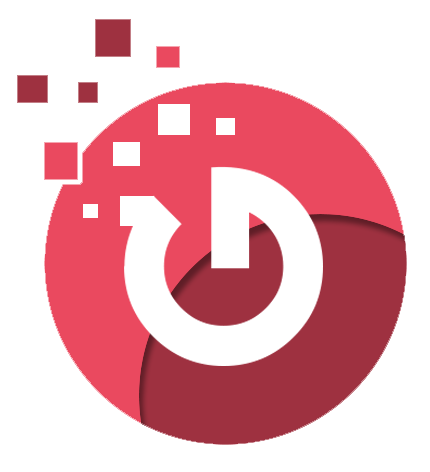

GitBacit mobilversjon
Vennligst bruk PC for fullversjon av siden, dette er bare grunnleggende informasjonsside
Gruppe og kontakt-informasjon
Om oss
GitBacit er en bachelorgruppe bestående av Tor Borgen, Mathias Nygård Evensen, Brage Fosso, Jonas Omdal og Jørgen Søvre. Medlemmene av gruppen har et godt kjennskap til hverandre. Vi har samarbeidet I ulike emner gjennom vårt studieløp ved UiA. Gjennom våre tidligere gruppeprosjekter har vi funnet en god dynamikk I gruppen.
Gruppen interresserer seg særdeles for programmering. Fordelt på gruppemedlemenne har vi styrker I både front-end og back-end programmering. Vi er opptatt av å lære nye språk og rammeverk, og vi ønsker å tilegne oss kunnnskap og erfaring med ny tekonologi.
Gruppen innehaver bred kompetanse. Vi har erfaring med systemanalyse, SCRUM rammeverket, Java utvikling, Git, data modellering og database utvikling I MySQL og PL/SQL, utvkling av nettsider med bruk av HTML, CSS og Javascript, WordPress. For mer informasjon om våre faglige egenskaper, bli bedre kjent med hvert enkelt gruppemedlem under "Users".
For å utnytte gruppens potensialet, hadde det vært optimalt å arbeidet med et prosjekt som involverer både front-end og back-end programmering. På denne måten kan vi bidra med våre gode kvaliteter. Og vi får praktisert det vi ønsker å jobbe med innenfor arbeidslivet.
Kontakt oss på
gitbacit@gmail.com